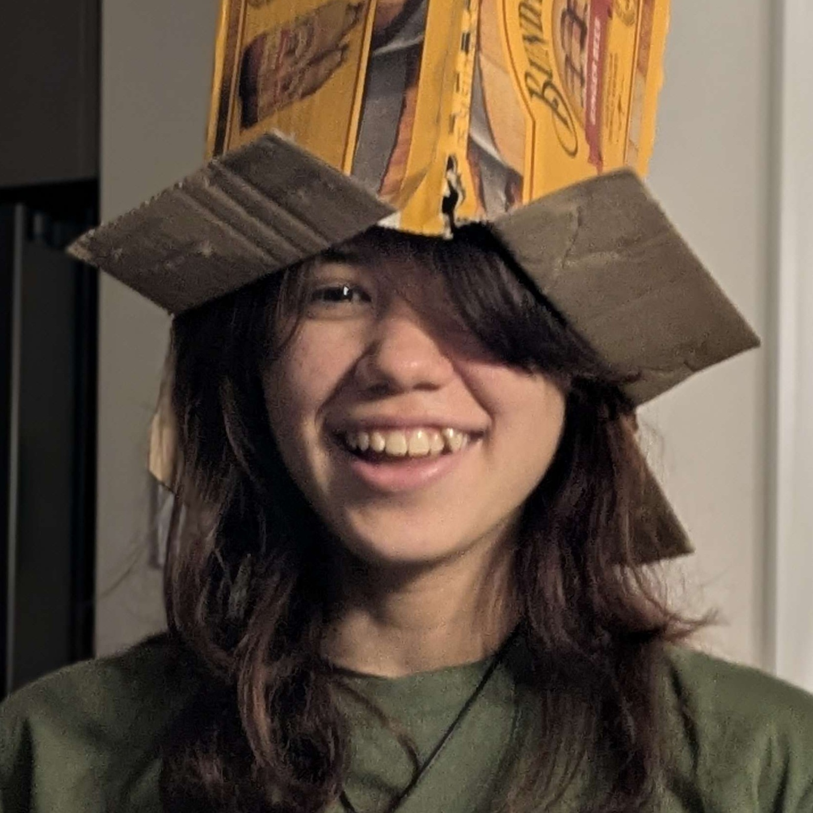
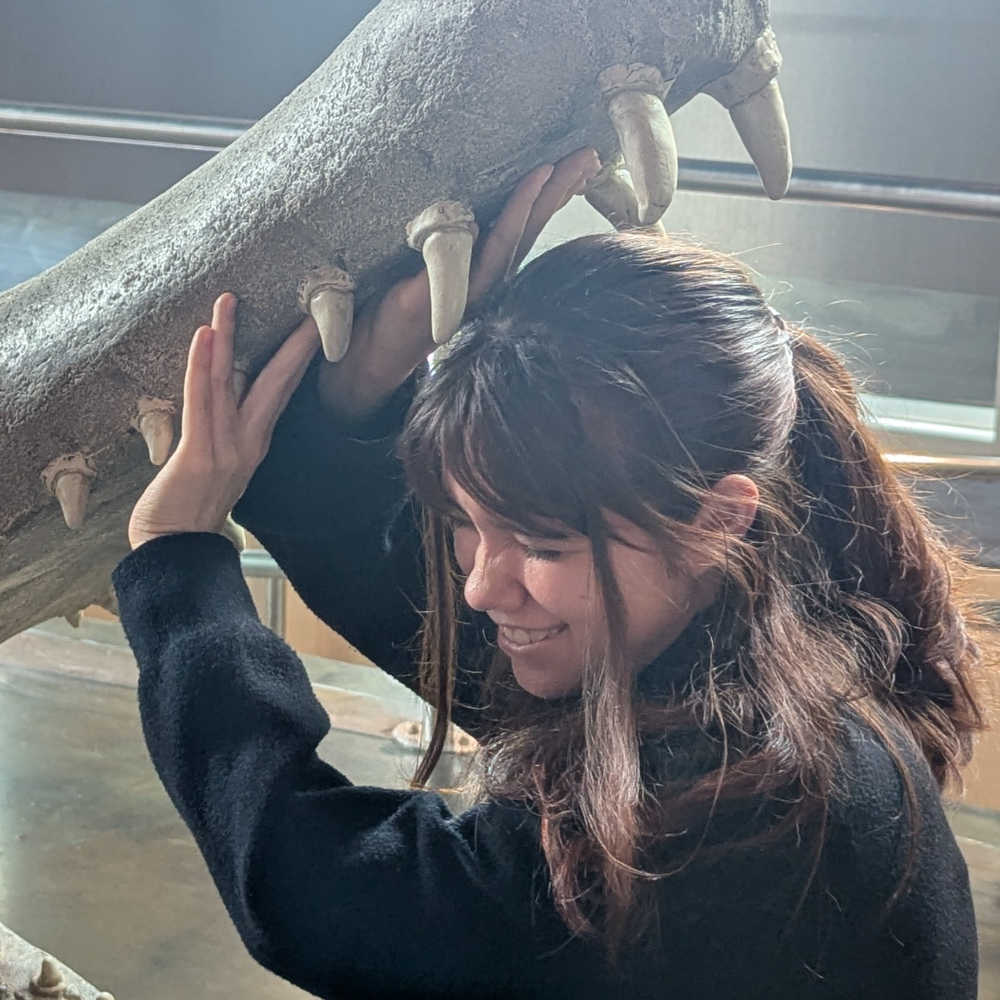

Hi I'm Sophie


I’m an emerging interaction designer who specialises in UI/UX and visual design, with a big passion for web design and frontend development.
As both an artist and designer, I enjoy producing visually engaging digital works that focus on creating fun and interactive experiences. I love designing for people and problem-solving, always striving to create intuitive and user-centered solutions.